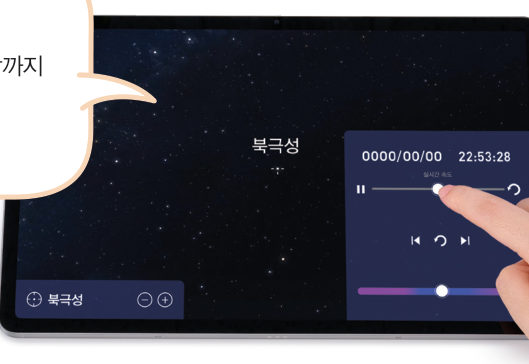
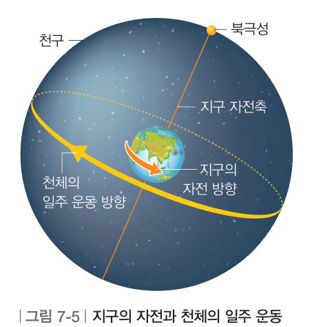
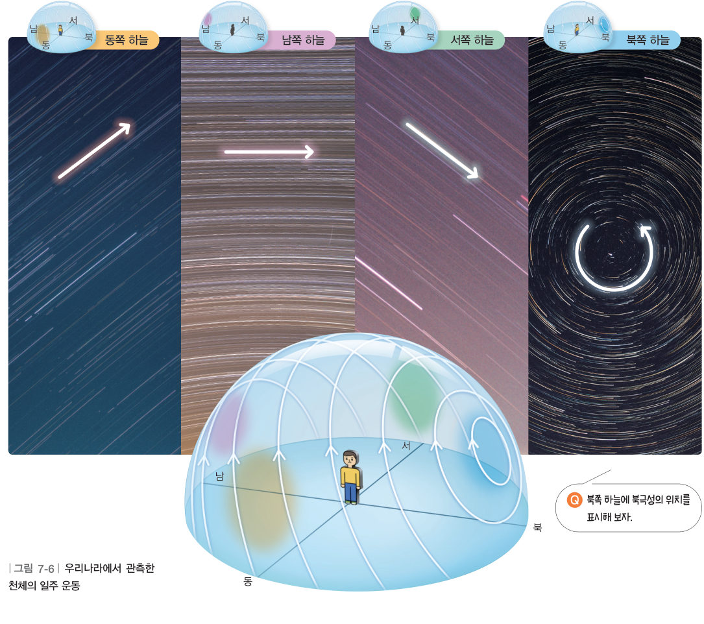
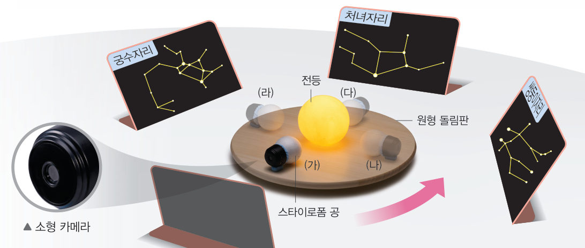
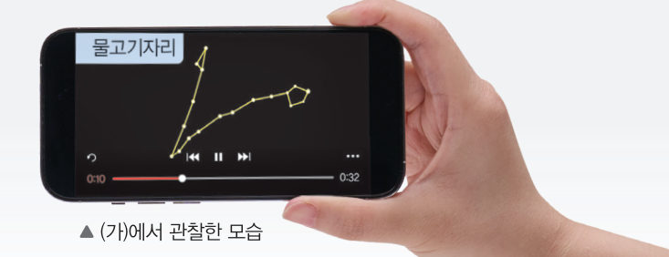
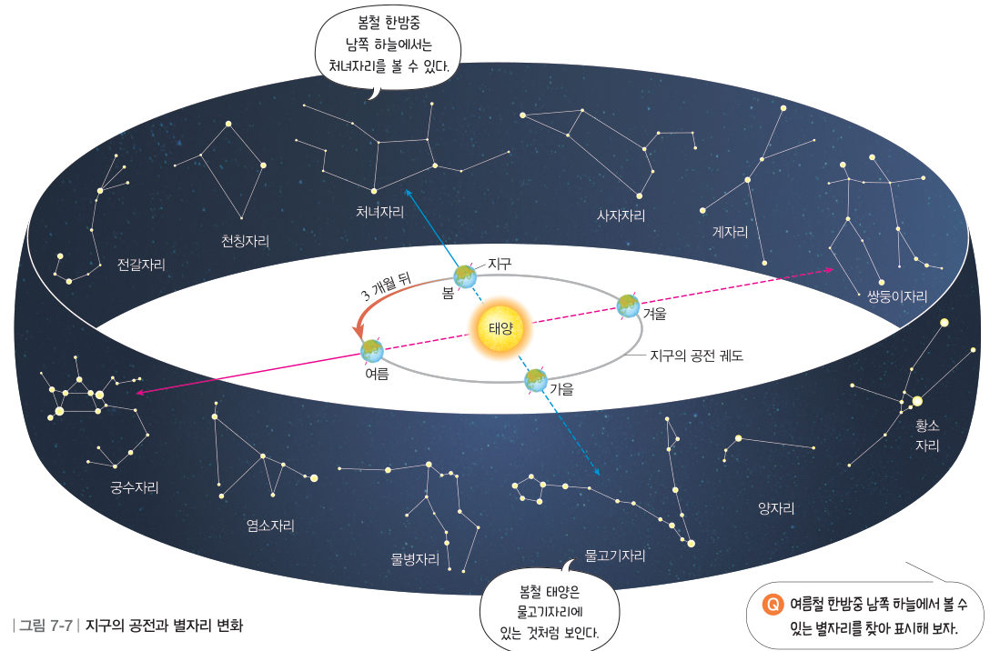
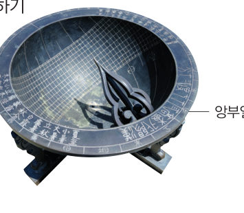

“어디로 가는 거야?” “네가 움직이는 거야.” 회전목마는 왜 휴지통이 움직이는 것처럼 느꼈을까? 가상 밤하늘에서 별의 일주 운동을 관찰하고, 3D 공전 모형으로 계절에 따라 별자리가 바뀌는 까닭을 알아보자.
🎯 이 단원을 배우면 — 지구의 자전으로 나타나는 천체의 겉보기 운동과, 지구의 공전으로 나타나는 별자리 변화를 설명할 수 있다.
단원 열기2. 지구와 달 237쪽
태양이 조금씩 가려졌어.
어제는 하늘에 신기한 현상이 나타나서 하늘을 촬영했어. 처음에는 태양이 둥글었는데 시간이 지나면서 태양이 조금씩 가려졌어.
두 번째 블록
태양이 가려지는 현상은 왜 일어날까?
‘지구의 운동으로 나타나는 현상’(238쪽), ‘모양이 달라지는 달’(242쪽), ‘가려지는 태양과 달’(246쪽)의 블록을 모으면 답할 수 있어요. 🧩
✔이 단원과 관련해 이미 알고 있는 것을 모두 골라 보자.
해 보기지구의 자전으로 나타나는 별의 운동 알아보기 238쪽
지구의 자전으로 나타나는 현상은 무엇일까?
움직이는 회전목마에서 주위를 보면 정지해 있는 물체가 회전목마의 운동 방향과 반대로 움직이는 것처럼 보인다. 이처럼 지구가 서쪽에서 동쪽으로 자전함에 따라 태양과 달은 동쪽에서 떠서 서쪽으로 지는 것처럼 보인다.

238쪽천체 관측 앱 — ① 북극성 위치 확인 ② 일몰~일출까지 시간이 흐르도록 설정 ③ 북극성 주변 별들의 운동 관찰
가상 천체 관측 앱우리나라(북위 37.5°)의 밤하늘
바라보는 방향을 고르고 [▶ 시간 흐르게]를 누르자. [별의 자취 남기기]를 켜면 카메라를 오래 열어 둔 사진처럼 별이 지나간 길이 남아요. 네 방향의 별의 자취를 모두 관찰해 보자.
북쪽 하늘 · 0시간 경과
1북극성 주변 별들은 을 중심으로 으로 돈다. 이것은 지구가 하기 때문이다.
2각 방향의 하늘에서 별이 움직이는 모습을 골라 보자.
동쪽 하늘
남쪽 하늘
서쪽 하늘
북쪽 하늘
교과서천구와 천체의 일주 운동 239쪽

그림 7-5지구의 자전과 천체의 일주 운동
지구에서 밤하늘을 보면 별들은 거대한 구의 안쪽에 붙어 있는 것처럼 보인다. 이러한 가상의 구를 천구라고 하고, 천구의 중심에는 지구가 있다. 지구는 자전축을 중심으로 서쪽에서 동쪽으로 자전한다. 따라서 지구에 있는 관측자에게 천체는 그림 7-5와 같이 ●북극성을 중심으로 하루에 한 바퀴씩 동쪽에서 서쪽으로 원을 그리며 도는 것처럼 보인다. 이와 같이 지구의 자전으로 하루 동안 나타나는 천체의 겉보기 운동을 천체의 일주 운동이라고 한다. 우리나라에서는 그림 7-6과 같이 북쪽 하늘을 보면 천체가 북극성을 중심으로 시계 반대 방향으로 도는 것처럼 보이고, 남쪽 하늘을 보면 천체가 동쪽에서 서쪽으로 이동하는 것처럼 보인다.
●북극성의 위치 북극성은 천구의 북극 가까이에 있지만, 정확히 천구의 북극에 있지는 않다.

그림 7-6우리나라에서 관측한 천체의 일주 운동 — 동쪽·남쪽·서쪽·북쪽 하늘
해 보기지구의 공전으로 나타나는 별자리 변화 알아보기 240쪽
지구의 공전으로 나타나는 현상은 무엇일까?
지구는 태양을 중심으로 일 년에 한 바퀴씩 서쪽에서 동쪽으로 공전한다.

240쪽원형 돌림판 가운데에 전등, 밖에 별자리 그림 4 개(물고기·쌍둥이·처녀·궁수자리), 소형 카메라를 붙인 스타이로폼 공

240쪽원형 돌림판을 시계 반대 방향으로 돌리며 소형 카메라에 찍힌 별자리를 관찰한다. ▲ (가)에서 관찰한 모습
3D 가상 실험3D 공전 모형과 한밤중의 하늘
달(月)을 바꾸거나 [▶ 공전]을 눌러 지구를 시계 반대 방향(서→동)으로 돌려 보자. 오른쪽 아래 작은 화면은 지구의 밤쪽(태양 반대쪽)에서 본 한밤중 남쪽 하늘이에요. 노란 테두리는 태양이 겹쳐 보이는 별자리예요.
3D 공전 모형 · 드래그하여 돌리기-
1전등은 , 스타이로폼 공은 을 나타낸다.
2지구가 (가) 4월 → (나) 7월 → (다) 10월 → (라) 1월 위치로 공전할 때, 한밤중 남쪽 하늘에 보이는 별자리를 순서대로 늘어놓아 보자.
물고기자리
쌍둥이자리
처녀자리
궁수자리
교과서지구의 공전과 별자리 변화 241쪽
한밤중 남쪽 하늘에서는 태양의 반대쪽에 있는 별자리를 볼 수 있다. 지구는 태양을 중심으로 공전하기 때문에 지구에서 볼 수 있는 별자리는 그림 7-7과 같이 계절에 따라 달라진다. 한편 태양은 지구가 공전함에 따라 별자리를 배경으로 서쪽에서 동쪽으로 이동하여 일 년 뒤에는 처음 위치로 되돌아오는 것처럼 보인다. 이와 같이 지구의 공전으로 일 년 동안 나타나는 태양의 겉보기 운동을 태양의 연주 운동이라고 한다.

그림 7-7지구의 공전과 별자리 변화 — 봄철 한밤중 남쪽 하늘에서는 처녀자리, 봄철 태양은 물고기자리에 있는 것처럼 보인다.
더 알아보기 · 황도 태양이 연주 운동하면서 별자리를 배경으로 지나가는 길을 황도라고 한다. 태양은 황도를 따라 지구의 공전 방향과 같은 방향으로 이동하는 것처럼 보인다.
1여름철 한밤중 남쪽 하늘에서 볼 수 있는 별자리는 이다.
스스로 확인하기238쪽 학습 목표를 달성했는지 확인해 보자 241쪽
1개념 확인 지구가 태양을 중심으로 ( )쪽에서 ( )쪽으로 ( )하기 때문에 한밤중 남쪽 하늘에서 볼 수 있는 별자리는 계절에 따라 달라진다.

앙부일구
2사고력 앙부일구는 태양의 움직임을 이용하여 시간을 측정하는 해시계이다. 태양의 일주 운동과 관련지어 해시계의 원리를 설명해 보자.
5분 테스트지구의 운동으로 나타나는 현상
1지구는 자전축을 중심으로 에서 으로 하루에 한 바퀴씩 자전한다. 지구의 자전으로 천체가 북극성을 중심으로 동쪽에서 서쪽으로 하루에 한 바퀴씩 도는 것처럼 보이는 겉보기 운동을 천체의 이라고 한다. 천체의 일주 운동 방향과 지구의 자전 방향은 서로 ( ).
2지구는 태양을 중심으로 일 년에 한 바퀴씩 에서 으로 공전한다. 지구의 공전으로 태양이 별자리를 배경으로 서쪽에서 동쪽으로 일 년에 한 바퀴씩 도는 겉보기 운동을 태양의 이라고 한다. 지구가 공전하기 때문에 계절에 따라 한밤중에 보이는 별자리가 진다.
3㉠ 한밤중 남쪽 하늘에 물병자리가 보이는 위치에 지구가 있을 때, 태양 쪽에 있는 별자리는? ㉡ 태양이 물병자리에 있는 것처럼 보이는 위치에 지구가 있을 때, 한밤중에 남쪽 하늘에서 보이는 별자리는?
4지구 자전으로 나타나는 현상은 ‘자’, 지구 공전으로 나타나는 현상은 ‘공’을 골라 보자.
⑴ 달이 동쪽에서 떠서 서쪽으로 지는 것처럼 보인다.
⑵ 우리나라 북쪽 하늘에서 천체가 북극성을 중심으로 하루에 한 바퀴씩 도는 것처럼 보인다.
⑶ 태양이 별자리를 배경으로 일 년 동안 한 바퀴를 도는 것처럼 보인다.
스스로 정리하기지구의 운동으로 나타나는 현상 248쪽
1지구의 운동으로 나타나는 현상
(1) 천체의 : 천체가 하루에 한 바퀴씩 동쪽에서 서쪽으로 도는 겉보기 운동 · 원인: 지구의 · 보이는 현상: 우리나라에서 북쪽 하늘을 보면 천체는 북극성을 중심으로 방향으로 도는 것처럼 보인다. (2) 태양의 : 태양이 별자리를 배경으로 일 년에 한 바퀴씩 서쪽에서 동쪽으로 도는 겉보기 운동 · 원인: 지구의 · 보이는 현상: 한밤중에 남쪽 하늘에서 보이는 별자리는 계절에 따라 다르다.
제출학생 정보 · 제출하기
모든 활동을 마친 뒤 제출하면 전체가 한 번에 채점되고 피드백이 나타나요. 답안은 선생님 스프레드시트(중1 탭)에 기록돼요.